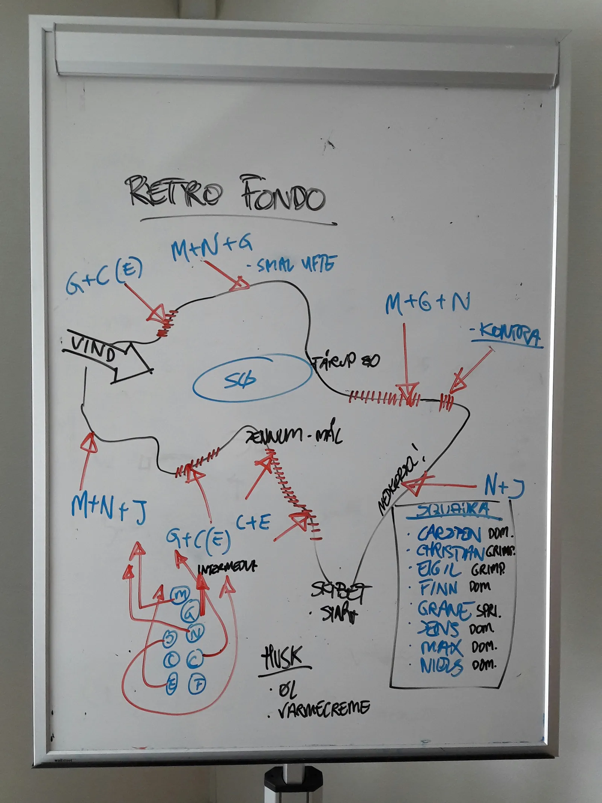

BREAKING – Squadra Moltenis taktik til Retro Fondo kompromitteret

Squadra Moltenis strategiske plan for sæsonens første løb, Retro Fondo, er blevet kompromitteret.
Jeg ved ikke om det er den berygtede russiske hackergruppe Fancy Bear, Bagmanden fra Team K-Werk eller en spion fra Team Velopress, der står bag. Men faktum er, at nogen har affotograferet vores taktiktavle med planen for på lørdag, fortæller holdkaptajn Niels Bjørnsteen.

Squadra Molteni stiller til start med et stærkt 8-mandshold på lørdag i til Retro Fondo: Carsten Jakobsen, Christian Vaaben, Eigil Leegaard, Finn Birk, Grane Maaløe, Jens Langergaard, Max Nielsen og Niels Bjørnsteen.
Vi plejer jo at være meget åbne i forhold til vores taktik forud for et løb. Vi har jo tidligere meldt ud, at vi gør som vi plejer; vi stikker i højre og venstre – og på sidste bakke sender vi vores grimpeur Eigil Leegaard afsted. Men det er første gang, at vores bagvedliggende strategiske plan er sluppet ud, fortæller Løjtnant Kasper Sørensen, der sammen med Maria Winther er rejst på højdetræningslejr i Italien.
Ruten til Retro Fondo køres på en kuperet rundstrækning på godt 20 km, med 2-3 længere bakker og en del kortere kontrabakker.
– Det er en krævende rute, og der er mange muligheder for angreb. Det oplagte ville være et angreb på Jennumbakken, men som det nu er kommet frem, så opererer vi med mange flere muligheder – blandt andet også, at Grane Maaløe skal smadre hele feltet på de to indlagte intermedia sprints, siger Niels Bjørnsteen
Starten for Retro Fondo går kl. 10.30 ved Skibethallen – og vinderen forventes i mål små to timer senere på toppen af Jennumbakken ved Jennum Brugs.